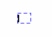
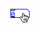
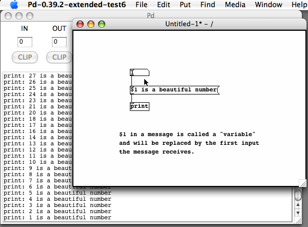
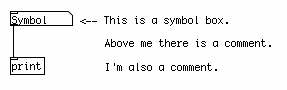
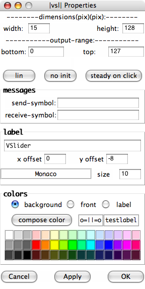

The Interface
Now that Pd is installed let us look at the result when the main Pd window opens.
Main Pd Window

As of Pd 0.39, all of the messages that Pd produces are sent to the main Pd window (before this, they were sent to the shell which was running Pd). When you start Pd, this main Pd window should tell you important information, such as the externals you are loading and whether any errors occurred while loading them, as well as any errors connecting to the soundcard. Later, you will also use this main Pd window to see information about the patch you are working on, as well as for debugging (correcting errors in your patch). So keep this window in a place where you can find it on your screen.
Here is an overview of common messages that you will encounter in the Main Pd Window:
[import] tells details of the current version on Pd-extended, in this case 'Pd version 0.14.4 extended.'
GEM: describes the details of the Graphics Environment of Multimedia available.
libdir_loader: itemizes the various libraries loading into Pd-extended. This screen grab shows about 20% of the libraries that are loading.
Error example: If you were reading the Pd window on a Mac, the Pd window might tell you that you did not have X11 library that is an application to display unix programs, a desirable component of Pd. See how that error message appears in the chapter InstallingOSX "Status: X11 Library not loaded."
There are a few other important features about this main Pd window. At the top of the window, you will find audio level indicators that provide a general idea of the loudness of the sound that you are sending to the soundcard. If this level goes to 100 or higher, you are sending too high a level and you will hear a distorted sound. The boxes marked "Clip" will also flash red. To use the audio level meters, check the box that says "peak meters" in the main Pd window.
Also found on the top part of the Main Pd Window is a box marked "compute audio", which you can use to turn on and off audio processing. When you open the "Test Audio and MIDI" patch, Pd will automatically turn audio processing on for you.
Last is a box marked "DIO". This stands for Digital In Out errors, and this box should flash red when Pd has difficulties sending data to your sound card. If you click this box, Pd will print a list of times when these DIO errors occurred in the main Pd window. The "console" box oggles the text displayed in the Pd window.
Help Browser Window

The last thing to point out before getting started with a new patch is the "Help" menu. You can access this resource from the "Help" menu on the top navigation bar. Under this drop-down menu, you can open the official Pd manual, written by Miller S. Puckette in "HTML" format, which can be viewed in your web browser. You can also open a file "Browser", pictured above, which will list the built-in help patches which come with Pd. </p
All of these documents are valuable resources, however many newcomers to Pd can find them confusing. We will cover some of these basics in the "Dataflow", "Audio" and "Patching Strategies" tutorials in this manual, after which you can return to the built-in help files with a bit better understanding.
Starting a new Patch
Under the "File" menu in the main Pd window, create a "New" Pd patch. It should look something like this:

Unlike other software for creating audio or video media, such as Ableton Live, CuBase or Final Cut Pro, where a new file shows you a variety of buttons, menus and timelines, Pd gives you a blank, white space. Within that white space, you can make a synthesizer or video mixer, translate sensor input into the movements of a robot or stream movies to the internet, for example. The difference between Pd and software like Live is that it doesn't start with any preconceived ideas about how to make your artwork. Where Live provides you with a set of tools suited primarily for the production of loop-driven dance music, Pd acts more like a text editor where anything is possible, so long as you know how to write it. It is this kind of possibility and freedom that attracts many artists to using Pd.
To explore these possibilities, you must understand Pd as being a written language like German or Chinese. As in any language, Pd has a vocabulary (the words used in the language) and a grammar (the way to put these words together so that they make sense). And like learning any language, you first have to learn how to say simple things like "What is your name?" before you can write poetry! So let's start simple.
You will notice that once we have opened a new Pd patch, there are a few new menu items to choose from. The "Edit" menu has all the kinds of functions you would expect from a text editor like Notepad, TextEdit, OpenOffice or Word, such as "Cut", "Paste", "Duplicate", "Select All", etc etc.
There is also a "Put" menu, containing a list of the kinds of things you will be putting in your patch, such as "Object", "Message", "Number", "Symbol", "Comment" and a range of GUI (Graphical User Interface) elements such as "Bang", "Toggle", "Slider", etc.
Interface differences in Pure Data
While the main functionality of Pure Data doesn't change between operating systems, the locations and contents of some of the menus do. Depending on the system you are running, you will be able to do the following:
Linux
From the "File" menu, you can:
- Create a "New" Pd patch
- "Open" a Pd patch which is saved on your computer
- Send a "Message" to the running Pd application
- Set the search "Path" which Pd uses
- Change the "Startup" flags which Pd uses
- "Quit" Pd
From the "Find" menu, you can:
- "Find last error" which occurred in the program
From the "Windows" menu, you can:
- Change between the different open Pd patches
From the "Media" menu, you can:
- Turn audio "ON" and "OFF"
- Change between the different available audio drivers
- Change between the different available MIDI drivers
- Change the "Audio Settings"
- Change the "MIDI Settings"
- "Test Audio and MIDI"
- View the CPU "Load Meter"
And from the "Help" menu, you can:
- Read information "About Pd"
- Open a "Browser" to see some help patches which are included in Pd
Mac OS X
From the "Pd" menu (which should contain the version number as well), you can:
- Read information "About Pd"
- Change the following "Preferences":
- Set the search "Path" which Pd uses
- Change the "Startup" flags which Pd uses
- Change the "Audio Settings"
- Change the "MIDI Settings"
- Quit" Pd
From the "File" menu, you can:
- Create a "New" Pd patch
- "Open" a Pd patch which is saved on your computer
- Send a "Message" to the running Pd application
- "Quit" Pd
- "Find last error" which occurred in the program
- Turn audio "ON" and "OFF"
- Change the "Audio Settings"
- Change the "MIDI Settings"
- "Test Audio and MIDI"
- View the CPU "Load Meter
From the "Windows" menu, you can:
- Change between the different open Pd patches
And from the "Help" menu, you can:
- View the author's documentation as an HTML file
- Open a "Browser" to see some help patches which are included in Pd
Placing, connecting and moving Objects in the Patch

Use the "Put" menu to place an "Object" in your patch. Click on the patch to drop the object in its place. You will see a box made of a broken blue line, with a flashing cursor inside indicating that you should type something there.

Objects are the "vocabulary" of Pd. The more names of objects you know, the more complicated things you can do with Pd. If you type the word "print" inside this object and click again outside the box, you will create the [print] object. </p?
Return to the "Put" menu, and this time place a "Number" in your patch. Notice that the shape of the number box is different from the shape of the object box.

To get help associated with a specific object you can right-click it. or use the Control key and click on OS X. Then just select "help" from the drop-down menu (pictured below). This is something like the "dictionary entry" for the object, and should define what it does and also show several examples of its use.

You should also notice that both the object and the number boxes have small rectangles at the corners. If these are at the top of the object, they are called "inlets", and at the bottom they are called "outlets". When you are working on your patch, your cursor is shaped like a pointing finger. If you put that finger over an outlet, it changes into a black circle which indicates that the outlet is selected.
Select the outlet of the the number box, click and drag that black circle until it reaches the inlet at the top of the [print] object. When you have done that, you will see the cursor change from the pointing finger to the black circle again. If let go of the mouse button now, you will make a connection from the outlet of the number box to the inlet of [print]. If you want to remove this connection, place your cursor over the connection until you see a black X and then click. The connection will turn blue and you can remove it with the Backspace or Delete key on your keyboard.

If you click on the patch away from the number box and [print] object and drag, you can draw a box which selects them. You will see they are selected because they will turn blue. Single objects can be selected by clicking once on them.

Once the objects on screen are selected, you can:
- Move them by dragging them with the mouse
- Move them in small increments with the Arrow keys
- Move them in larger increments with the Shift and Arrow keys
- Delete them with the Backspace or Delete keys
- Copy them by using the Control and C keys (Apple and C keys on OS X) or the Copy menu item under Edit
- Cut them by using the Control and X keys (Apple and X keys on OS X) or the Cut menu item under Edit
- Once Cut or Copied, you can Paste them with the Control and V keys (Apple and V keys on OS X) or the Paste menu item under Edit
- You can also Duplicate the selected items with the Control and D keys (Apple and D keys on OS X) or the Duplicate menu item under Edit


Pasted or duplicated objects are automatically selected together, so you can grab ahold of them and move them immediately after placing them in the patch.
Edit Mode and Play Mode
So far we've been able to put objects in the patch, connect them, move them around or delete them. But how does one get some results from this patch? In this case, we have connected a number box to a [print] object, which should print the numbers we send to it in the main Pd window. Now we have to learn how to send numbers to the print object.
To make this happen, we need to change out of "Edit Mode" and into "Play Mode". You can do this by clicking on the "Edit Mode" item in the Edit menu, or by using the Control and E keys (Apple and E keys on OS X).

When you enter into "Play Mode", you will see that the pointing finger cursor changes into an arrow cursor. This change signifies that the mouse will interact differently with the elements within the patch.


Now, if you click inside the Number object and drag your mouse up or down you can change the numbers inside of it. Any changed number is sent out through the outlet to any connected objects. Since the object is connected to the inlet of the [print] object the number is printed to the main Pd window.

If you hold the Shift key while using the mouse to change the number, you will scroll through decimal numbers. Using the Alt key plus a mouseclick will toggle the Number box between 0 and 1. You can also change the number by clicking once on the number box, using your keyboard to change the value, and then pressing the Enter key to send the value to the outlet.

If you want to make any changes to a patch that is "Play Mode", you have to switch back to "Edit Mode". To do so, use the "Edit Mode" menu item or the key combination Control (or Apple) and E. Note that you are automatically placed in Edit Mode whenever you add any new item from the "Put" menu to your patch.
Messages, Symbols and Comments
The "Message" box is used to store and send information to other objects, and can contain numbers or text. It also has a unique shape, which resembles an envelope like you would use to send a letter. Place two different messages above the number box in our exercise. Like the object, messages also give a flashing cursor indicating that you should enter some information when you create them. Enter "2" in one of the messages and "4" in the other, and connect both to your number box. Switch to Play Mode and click on each of the messages. When you do, you will see that the number box changes according to the message that you send it, and that the message is also sent onwards to the [print] object.

You can also send numbers and other information to the message box. Create a message with the text " is a beautiful number", and connect it to the [print] object. Then connect a Number to the inlet of the message, and in Play Mode change the value of the number. You will see in the main Pd window that whatever number you send to this message replaces the . This is because is a "variable", and will take the value of whatever you send to it. This is important because different objects need to be sent different messages in order to do things. We will look at more uses for messages and variables later in the Dataflow Tutorial.

A "symbol" is another way of storing and sending information. Once created, you can use it to display the output of some objects, or you can type directly into it and hit Enter to send the text out. Please note that no spaces will appear in the symbol box when you type into it, since separate words would be considered separate symbols.
A "comment" is simply a way of making a note to yourself so that you (or someone else) can understand what you were trying to do later on. You can make as few or as many as you want, and they have no effect on the patch itself.

GUI Objects
Pd has a number of GUI objects you can use to graphically control your patch and to improve its visual appearance. These are:

- Bang: this GUI object sends a Message named "Bang" every time it is clicked. "Bang" is a special message, which many Objects interpret as "do an action right now!". Using the Bang GUI object is the same as creating a Message box with the word Bang in it. The Bang GUI object can also be used to receive and display Bang messages. For more information on this, see the "Counter" chapter in the Dataflow Tutorial.
- Toggle: when clicked, the Toggle sends out one of two values--a zero when it is unchecked and a non-zero number when it is checked. The non-zero number is 1 by default, however this can be changed in the "Properties". The Toggle also has an inlet, which can be used to display whether an incoming number is zero or not.
- Number2: this is almost identical to the Number box, however it has further options in its "Properties", including the ability to save its current value when the patch is saved (by changing the "no init" box to "init"). The Number2 has an inlet which can be used to display incoming numbers as well.
- Vslider and Hslider: these are Vertical and Horizontal sliders which send out their current value when moved with the mouse. The default range of a slider is 0-127, which can be changed in the "Properties". Both sliders have an inlet which can be used to display incoming numbers within the range of the slider.
- Vradio and Hradio: these are Vertical and Horizonal "radio buttons", which send out their current value when one of the buttons in them is clicked with the mouse. The default size of a radio button is 8 buttons, which can be changed in the "Properties". Both types of radio buttons have an inlet each, which can be used to display integer (whole) numbers within the range of the radio buttons.
- VU: a VU meter displays the average volume level of any audio signal which is connected to it in Decibels. You may switch the value scale on the right side on and off in the "Properties".
- Canvas: a canvas is a rectangular area of pixels, whose size and color may be changed under its "Properties". Canvases are useful as backgrounds in your patch to improve its visual appearance and readability. Canvas also can be used as movable GUI objects that gather information about their position (x,y) inside a patcher. Keep in mind that Pd remembers the order in which anything is placed in the patch, so if you want your canvas to be behind certain objects, you must either create it first, or you must Select, Cut and Paste the objects you want in the foreground so that they appear in front of the canvas.
GUI Object Properties
If you right-click (or Control and click on OS X) on any GUI object, you will see the "Properties" menu. Here, you can change many aspects of each GUI object, such as its default values, size in pixels or its color. To change colors on Linux and Windows you should see a selection of available colors. On OS X these boxes are empty, so you must click on the "Compose Color" button. You can also add a label to your GUI object as well as set the Send and Receive symbols. For more information on Send and Receive, please see the Send/Receive chapter of the Patching Strategies tutorial.

Arrays and graphs
An "array" is a way of graphically saving and manipulating numbers. It works in an X/Y format, meaning you can ask the table for a value by sending it a value representing a location on the X (horizontal) axis, and it will return the value of that position value on the Y axis.
To create an Array, use the "Put" menu. When the new array is created, you will see two menus where you can change the properties of the array.

In the "canvas" properties menu, you can set the "X range" and "Y range", which represent the length in units of each axis, as well as the visual size of the array in pixels. In the "array" properties menu, you can set the "size" of the Array, which represents its length on the X axis, as well as it's name. Each Array you create must have a unique name, otherwise you won't be able to read from them.
Once an array is created and you are in Play Mode, you can click on the line inside and draw curves into the array. Arrays can also be filled with information from datafiles or soundfiles on your computer, as well as with mathematical functions. We'll discuss arrays in more detail in the arrays chapter of the Dataflow Tutorial.
Graph
A "graph" is simply a container a graphical container that can hold several arrays. An array needs a graph to be displayed, so whenever you create an array from the menu, you will be asked whether you want to put it into a newly created graph or into an existing graph.
A Note on using GUI Objects
Pd uses a "vector-based" system for drawing the user interface. That means that every element on the screen is defined by a set of numbers rather than an image, and every change to these elements means that your computer must recalculate that part of the screen. For this reason, having a lot of GUI elements which are constantly changing is not recommended, as it can cause interruptions in the audio or slow down the response time of the interface.In particular, be careful not to use too many of the following:
- VU meters
- Graphical bangs, number boxes, sliders or radio buttons with rapidly changing inputs
- Arrays which are visible on the screen and which are redrawn
For a way of "hiding" GUI elements when they are not in use, please see the Subpatches and Abstractions chapters of the Patching Strategies Tutorial. And for a way of "hiding" the connections between GUI elements, please see the Send/Receive chapter of the Patching Strategies Tutorial.